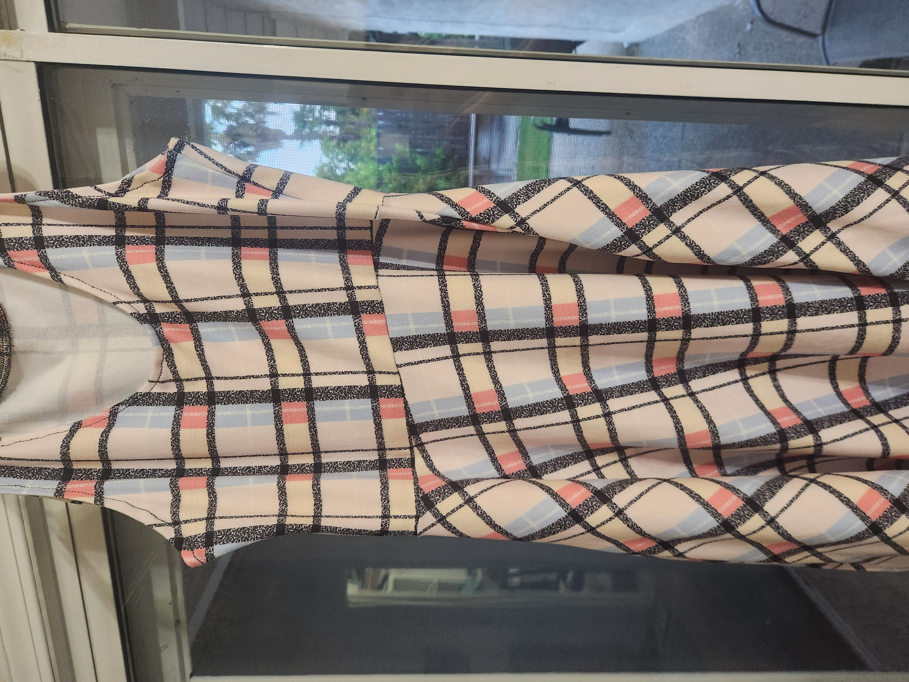
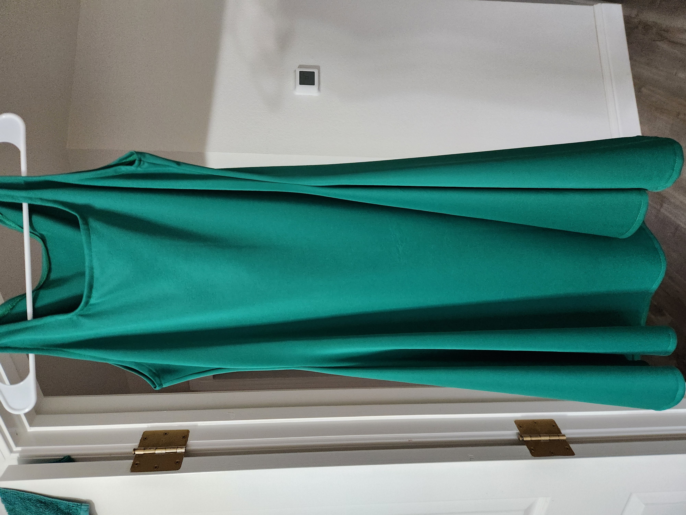
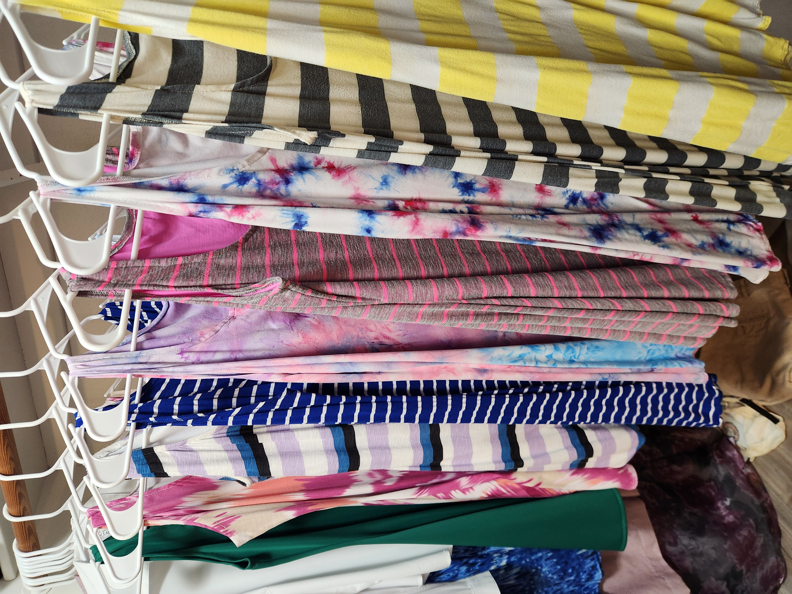
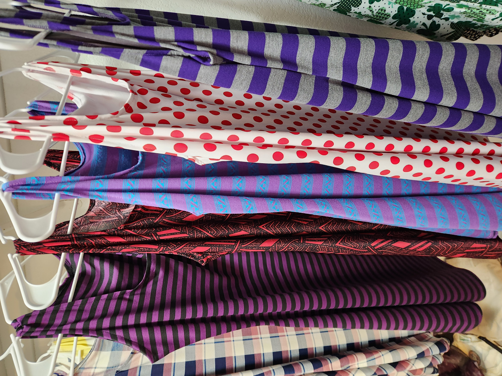

Kit Dresses
The evolution of my knit dress
It started with a simple idea: I had a well-fitting knit tank top and a semi-fitted 3/4 circle skirt. The obvious next step was to combine them into a summer dress.
At first, I wasn’t sure how to align the pieces. Nina helped me figure out how to match the skirt to the tank at the waistline, accounting for how knit fabric naturally flares over the body. That first version became a pieced dress with an empire waist.

After making a few of these, I built a small batch of them to understand the fit and consistency.

I wear the empire waist version most when I’m at a higher weight because it gives me the most comfort and ease through the waist and midsection. However, I wanted the design to feel more streamlined at lower weights, with a waistline that sits lower and more naturally on the body. From there, I refined the construction by removing the seam between the top and bottom, lowering the waistline, and simplifying it into a clean front-and-back panel structure. The result became a more natural A-line knit dress, still maintaining knee length but with a smoother silhouette.

And then I might have gone crazy at the fabric stores (in Sacramento, CA, Berkeley, CA... and maybe the LA Fashion District) and made a whole bunch of them in different colors and prints. I have a lot of dresses now.


One of the most interesting things about this particular pattern is how it easily goes both up in class (formality) as well as down in class (casual beach wear). The only thing they're missing now are the sleeves for a more conservative office environment.
Materials
I usually buy about 2.5 yards of fabric and matching thread. If the fabric is too sheer, I’ll grab another 2.5 yards of a thin white liner. And there is plenty of extra material to turn into a matching hair scrunchy.
Cost + time
Stretch knit fabric is usually about 60 inches wide and sold by the yard. I typically pay around $4–$7 per yard at my usual spots in Sacramento, San Jose, and Berkeley (though the LA Fashion District was closer to $3 when buying volume). So these dresses—without a liner—usually cost me about $8–$15 in materials and take around 2 hours to make.